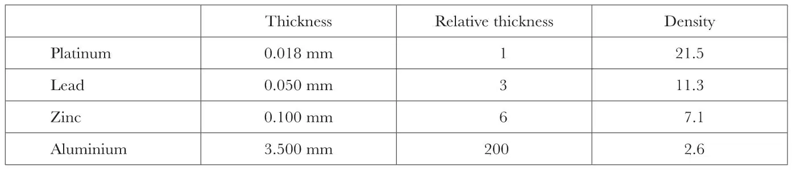
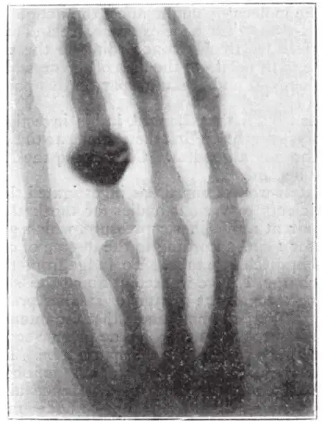
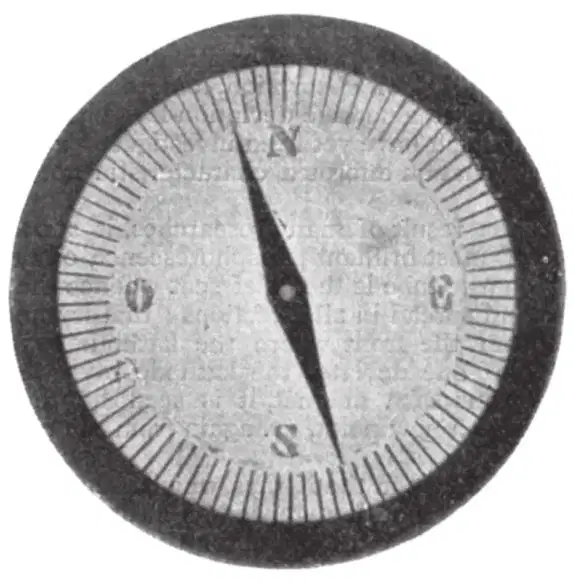

中文
中文W. C. Röntgen
Editor’s Note
This is an English translation of Wilhelm Conrad Röntgen’s German report, in December 1895, of the discovery of X-rays. While experimenting with a cathode ray tube (also called a Crookes’ or Lenard’s tube, after earlier investigators), in which electrons or “kathode rays” are accelerated by electric fields, Röntgen found that the tube emits radiation that penetrates black paper and induces fluorescence in a screen on the other side. The rays also can penetrate matter and produce photographic images of “buried” objects such as bones. Röntgen deduces that these rays are not cathode rays, but seem instead to be akin to ultraviolet rays, yet with much greater penetrating power. He called them X-rays simply “for the sake of brevity”. 中文
(1) A discharge from a large induction coil is passed through a Hittorf’s vacuum tube, or through a well-exhausted Crookes’ or Lenard’s tube. The tube is surrounded by a fairly close-fitting shield of black paper; it is then possible to see, in a completely darkened room, that paper covered on one side with barium platinocyanide lights up with brilliant fluorescence when brought into the neighbourhood of the tube, whether the painted side or the other be turned towards the tube. The fluorescence is still visible at two metres distance. It is easy to show that the origin of the fluorescence lies within the vacuum tube. 中文
(2) It is seen, therefore, that some agent is capable of penetrating black cardboard which is quite opaque to ultra-violet light, sunlight, or arc-light. It is therefore of interest to investigate how far other bodies can be penetrated by the same agent. It is readily shown that all bodies possess this same transparency, but in very varying degrees. For example, paper is very transparent; the fluorescent screen will light up when placed behind a book of a thousand pages; printer’s ink offers no marked resistance. Similarly the fluorescence shows behind two packs of cards; a single card does not visibly diminish the brilliancy of the light. So, again, a single thickness of tinfoil hardly casts a shadow on the screen; several have to be superposed to produce a marked effect. Thick blocks of wood are still transparent. Boards of pine two or three centimetres thick absorb only very little. A piece of sheet aluminium, 15 mm thick, still allowed the X-rays (as I will call the rays, for the sake of brevity) to pass, but greatly reduced the fluorescence. Glass plates of similar thickness behave similarly; lead glass is, however, much more opaque than glass free from lead. Ebonite several centimetres thick is transparent. If the hand be held before the fluorescent screen, the shadow shows the bones darkly, with only faint outlines of the surrounding tissues. 中文
Water and several other fluids are very transparent. Hydrogen is not markedly more permeable than air. Plates of copper, silver, lead, gold, and platinum also allow the rays to pass, but only when the metal is thin. Platinum 0.2 mm thick allows some rays to pass; silver and copper are more transparent. Lead 1.5 mm thick is practically opaque. If a square rod of wood 20 mm in the side be painted on one face with white lead, it casts little shadow when it is so turned that the painted face is parallel to the X-rays, but a strong shadow if the rays have to pass through the painted side. The salts of the metals, either solid or in solution, behave generally as the metals themselves. 中文
(3) The preceding experiments lead to the conclusion that the density of the bodies is the property whose variation mainly affects their permeability. At least no other property seems so marked in this connection. But that the density alone does not determine the transparency is shown by an experiment wherein plates of similar thickness of Iceland spar, glass, aluminium, and quartz were employed as screens. Then the Iceland spar showed itself much less transparent than the other bodies, though of approximately the same density. I have not remarked any strong fluorescence of Iceland spar compared with glass (see below, No. 4). 中文
(4) Increasing thickness increases the hindrance offered to the rays by all bodies. A picture has been impressed on a photographic plate of a number of superposed layers of tinfoil, like steps, presenting thus a regularly increasing thickness. This is to be submitted to photometric processes when a suitable instrument is available. 中文
(5) Pieces of platinum, lead, zinc, and aluminium foil were so arranged as to produce the same weakening of the effect. The annexed table shows the relative thickness and density of the equivalent sheets of metal. 中文

From these values it is clear that in no case can we obtain the transparency of a body from the product of its density and thickness. The transparency increases much more rapidly than the product decreases. 中文
(6) The fluorescence of barium platinocyanide is not the only noticeable action of the X-rays. It is to be observed that other bodies exhibit fluorescence, e.g. calcium sulphide, uranium glass, Iceland spar, rock-salt, &c. 中文
Of special interest in this connection is the fact that photographic dry plates are sensitive to the X-rays. It is thus possible to exhibit the phenomena so as to exclude the danger of error. I have thus confirmed many observations originally made by eye observation with the fluorescent screen. Here the power of the X-rays to pass through wood or cardboard becomes useful. The photographic plate can be exposed to the action without removal of the shutter of the dark slide or other protecting case, so that the experiment need not be conducted in darkness. Manifestly, unexposed plates must not be left in their box near the vacuum tube. 中文
It seems now questionable whether the impression on the plate is a direct effect of the X-rays, or a secondary result induced by the fluorescence of the material of the plate. Films can receive the impression as well as ordinary dry plates. 中文
I have not been able to show experimentally that the X-rays give rise to any calorific effects. These, however, may be assumed, for the phenomena of fluorescence show that the X-rays are capable of transformation. It is also certain that all the X-rays falling on a body do not leave it as such. 中文
The retina of the eye is quite insensitive to these rays: the eye placed close to the apparatus sees nothing. It is clear from the experiments that this is not due to want of permeability on the part of the structures of the eye. 中文
(7) After my experiments on the transparency of increasing thicknesses of different media, I proceeded to investigate whether the X-rays could be deflected by a prism. Investigations with water and carbon bisulphide in mica prisms of 30° showed no deviation either on the photographic or the fluorescent plate. For comparison, light rays were allowed to fall on the prism as the apparatus was set up for the experiment. They were deviated 10 mm and 20 mm respectively in the case of the two prisms. 中文
With prisms of ebonite and aluminium, I have obtained images on the photographic plate, which point to a possible deviation. It is, however, uncertain, and at most would point to a refractive index 1.05. No deviation can be observed by means of the fluorescent screen. Investigations with the heavier metals have not as yet led to any result, because of their small transparency and the consequent enfeebling of the transmitted rays. 中文
On account of the importance of the question it is desirable to try in other ways whether the X-rays are susceptible of refraction. Finely powdered bodies allow in thick layers but little of the incident light to pass through, in consequence of refraction and reflection. In the case of the X-rays, however, such layers of powder are for equal masses of substance equally transparent with the coherent solid itself. Hence we cannot conclude any regular reflection or refraction of the X-rays. The research was conducted by the aid of finely-powdered rock-salt, fine electrolytic silver powder, and zinc dust already many times employed in chemical work. In all these cases the result, whether by the fluorescent screen or the photographic method, indicated no difference in transparency between the powder and the coherent solid. 中文
It is, hence, obvious that lenses cannot be looked upon as capable of concentrating the X-rays; in effect, both an ebonite and a glass lens of large size prove to be without action. The shadow photograph of a round rod is darker in the middle than at the edge; the image of a cylinder filled with a body more transparent than its walls exhibits the middle brighter than the edge. 中文
(8) The preceding experiments, and others which I pass over, point to the rays being incapable of regular reflection. It is, however, well to detail an observation which at first sight seemed to lead to an opposite conclusion. 中文
I exposed a plate, protected by a black paper sheath, to the X-rays so that the glass side lay next to the vacuum tube. The sensitive film was partly covered with star-shaped pieces of platinum, lead, zinc, and aluminium. On the developed negative the star-shaped impression showed dark under platinum, lead, and, more markedly, under zinc; the aluminium gave no image. It seems, therefore, that these three metals can reflect the X-rays; as, however, another explanation is possible, I repeated the experiment with this only difference, that a film of thin aluminium foil was interposed between the sensitive film and the metal stars. Such an aluminium plate is opaque to ultra-violet rays, but transparent to X-rays. In the result the images appeared as before, this pointing still to the existence of reflection at metal surfaces. 中文
If one considers this observation in connection with others, namely, on the transparency of powders, and on the state of the surface not being effective in altering the passage of the X-rays through a body, it leads to the probable conclusion that regular reflection does not exist, but that bodies behave to the X-rays as turbid media to light. 中文
Since I have obtained no evidence of refraction at the surface of different media, it seems probable that the X-rays move with the same velocity in all bodies, and in a medium which penetrates everything, and in which the molecules of bodies are embedded. The molecules obstruct the X-rays, the more effectively as the density of the body concerned is greater. 中文
(9) It seemed possible that the geometrical arrangement of the molecules might affect the action of a body upon the X-rays, so that, for example, Iceland spar might exhibit different phenomena according to the relation of the surface of the plate to the axis of the crystal. Experiments with quartz and Iceland spar on this point lead to a negative result. 中文
(10) It is known that Lenard, in his investigations on kathode rays, has shown that they belong to the ether, and can pass through all bodies. Concerning the X-rays the same may be said. 中文
In his latest work, Lenard has investigated the absorption coefficients of various bodies for the kathode rays, including air at atmospheric pressure, which gives 4.10, 3.40, 3.10 for 1 cm, according to the degree of exhaustion of the gas in discharge tube. To judge from the nature of the discharge, I have worked at about the same pressure, but occasionally at greater or smaller pressures. I find, using a Weber’s photometer, that the intensity of the fluorescent light varies nearly as the inverse square of the distance between screen and discharge tube. This result is obtained from three very consistent sets of observations at distances of 100 and 200 mm. Hence air absorbs the X-rays much less than the kathode rays. This result is in complete agreement with the previously described result, that the fluorescence of the screen can be still observed at 2 metres from the vacuum tube. In general, other bodies behave like air; they are more transparent for the X-rays than for the kathode rays. 中文
(11) A further distinction, and a noteworthy one, results from the action of a magnet. I have not succeeded in observing any deviation of the X-rays even in very strong magnetic fields. 中文
The deviation of kathode rays by the magnet is one of their peculiar characteristics; it has been observed by Hertz and Lenard, that several kinds of kathode rays exist, which differ by their power of exciting phosphorescence, their susceptibility of absorption, and their deviation by the magnet; but a notable deviation has been observed in all cases which have yet been investigated, and I think that such deviation affords a characteristic not to be set aside lightly. 中文
(12) As the result of many researches, it appears that the place of most brilliant phosphorescence of the walls of the discharge-tube is the chief seat whence the X-rays originate and spread in all directions; that is, the X-rays proceed from the front where the kathode rays strike the glass. If one deviates the kathode rays within the tube by means of a magnet, it is seen that the X-rays proceed from a new point, i.e. again from the end of the kathode rays. 中文
Also for this reason the X-rays, which are not deflected by a magnet, cannot be regarded as kathode rays which have passed through the glass, for that passage cannot, according to Lenard, be the cause of the different deflection of the rays. Hence I conclude that the X-rays are not identical with the kathode rays, but are produced from the kathode rays at the glass surface of the tube. 中文
(13) The rays are generated not only in glass. I have obtained them in an apparatus closed by an aluminium plate 2 mm thick. I purpose later to investigate the behaviour of other substances. 中文
(14) The justification of the term “rays”, applied to the phenomena, lies partly in the regular shadow pictures produced by the interposition of a more or less permeable body between the source and a photographic plate or fluorescent screen. 中文

Fig. 1. Photograph of the bones in the fingers of a living human hand. The third finger has a ring upon it. 中文
I have observed and photographed many such shadow pictures. Thus, I have an outline of part of a door covered with lead paint; the image was produced by placing the discharge-tube on one side of the door, and the sensitive plate on the other. I have also a shadow of the bones of the hand (Fig. 1), of a wire wound upon a bobbin, of a set of weights in a box, of a compass card and needle completely enclosed in a metal case (Fig. 2), of a piece of metal where the X-rays show the want of homogeneity, and of other things. 中文

Fig. 2. Photograph of a compass card and needle completely enclosed in a metal case 中文
For the rectilinear propagation of the rays, I have a pin-hole photograph of the discharge apparatus covered with black paper. It is faint but unmistakable. 中文
(15) I have sought for interference effects of the X-rays, but possibly, in consequence of their small intensity, without result. 中文
(16) Researches to investigate whether electrostatic forces act on the X-rays are begun but not yet concluded. 中文
(17) If one asks, what then are these X-rays; since they are not kathode rays, one might suppose, from their power of exciting fluorescence and chemical action, them to be due to ultra-violet light. In opposition to this view a weighty set of considerations presents itself. If X-rays be indeed ultra-violet light, then that light must possess the following properties.
(a) It is not refracted in passing from air into water, carbon bisulphide, aluminium, rock-salt, glass or zinc.
(b) It is incapable of regular reflection at the surfaces of the above bodies.
(c) It cannot be polarised by any ordinary polarising media.
(d) The absorption by various bodies must depend chiefly on their density. 中文
That is to say, these ultra-violet rays must behave quite differently from the visible, infra-red, and hitherto known ultra-violet rays. 中文
These things appear so unlikely that I have sought for another hypothesis. 中文
A kind of relationship between the new rays and light rays appears to exist; at least the formation of shadows, fluorescence, and the production of chemical action point in this direction. Now it has been known for a long time, that besides the transverse vibrations which account for the phenomena of light, it is possible that longitudinal vibrations should exist in the ether, and, according to the view of some physicists, must exist. It is granted that their existence has not yet been made clear, and their properties are not experimentally demonstrated. Should not the new rays be ascribed to longitudinal waves in the ether? 中文
I must confess that I have in the course of this research made myself more and more familiar with this thought, and venture to put the opinion forward, while I am quite conscious that the hypothesis advanced still requires a more solid foundation. 中文
(53, 274-276; 1896)
* By W. C. Röntgen. Translated by Arthur Stanton from the Sitzungsberichte der Würzburger Physik-medic. Gesellschaft, 1895.